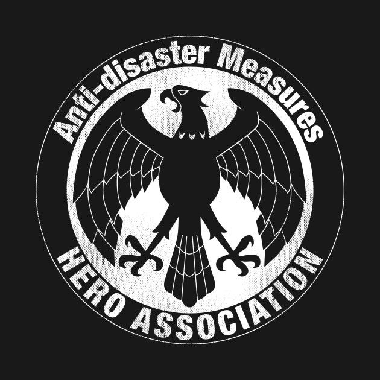

Hero Association
The Hero Association (ヒーロー協きょう会かい, Hīrō Kyōkai) is an organization founded by the multi-millionaire Agoni that manages all of the cities' heroes.[1] It operates independently of the government. Agoni also established the National Hero Registry (ヒーロー名簿, Hīrō meibo), the database that embraces every recognized hero. The Hero Association uses a hierarchical class system to organize its heroes, with four classes and individually numbered ranks within respective classes (classes C, B, A, and S).

Back to Home